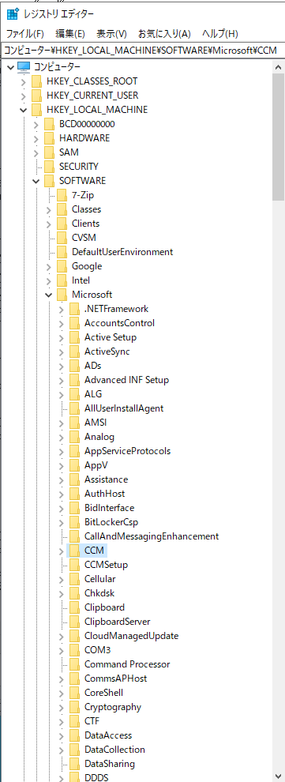
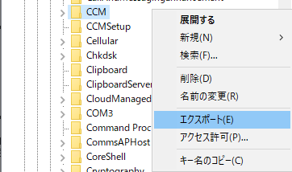
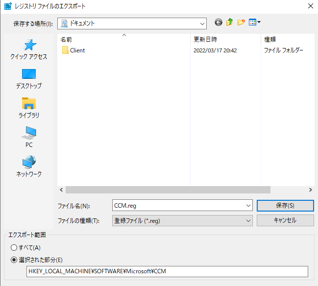
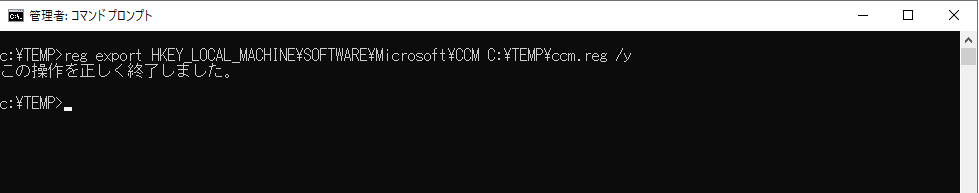

現在のレジストリ内容を出力していただく際の手順です。コマンドでの出力方法とGUIでの出力方法をご案内します。
出力いただきたいレジストリの内容は都度担当者より案内させて頂きます。
レジストリを出力いただきたい端末は都度担当者より案内させて頂きます。
対象端末の管理者権限が必要になります。
レジストリ ファイルの出力先の一時フォルダを適宜用意ください。(C:\TEMPなど)
対象端末に管理者権限でログインします。
レジストリ エディタを起動します。
レジストリを出力させたいエントリまで移動します。以下はHKLM\Software\Microsoft\CCM が対象だった場合です。

該当のキーを右クリックし、「エクスポート」を選択します。

適宜名前を付けて保存し、保存したファイルを弊社までご提供ください。

1 | reg export [指定されたレジストリ] [一時フォルダ出力先\ファイル名] /y |
